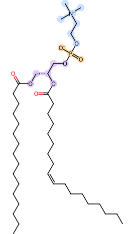

Los glicerofosfolípidos se construyen sobre el glicerol 3-fosfato: los carbonos sn-1 y sn-2 del glicerol están esterificados con dos ácidos grasos, y el fosfato de sn-3 se une por un enlace fosfodiéster a un alcohol, la cabeza polar. En las membranas suele haber un ácido graso saturado en sn-1 y uno insaturado en sn-2. La esfingomielina tiene una arquitectura parecida, pero sobre la esfingosina en lugar del glicerol.
Son moléculas anfipáticas: en el agua, las cadenas se agrupan y las cabezas quedan en contacto con ella, y así se forman las bicapas de las membranas. La relación entre el tamaño de la cabeza y el de las cadenas da a cada lípido una forma: los cilíndricos, como la fosfatidilcolina, forman bicapas planas; los cónicos, de cabeza pequeña, como la fosfatidiletanolamina, favorecen la curvatura. La cabeza decide también la carga, la distribución entre las dos monocapas y las proteínas que se unen a cada lípido.
Elige un fosfolípido en el desplegable. Todos los modelos, también los de los triacilgliceroles, están a la misma escala, con la cabeza arriba y las cadenas hacia abajo, como en la monocapa superior de una bicapa. Regiones colorea la cabeza polar, el fosfato, el glicerol y las cadenas, con los mismos colores que la fórmula; Dobles enlaces marca en verde los carbonos de los dobles enlaces, que acodan las cadenas (véase Ácidos grasos); Posiciones sn rotula los carbonos del glicerol y los rodea de un halo dorado.

La colina, con un amonio cuaternario de carga positiva, compensa la carga negativa del fosfato: la molécula es un ion dipolar sin carga neta. Es el fosfolípido más abundante de las membranas de las células eucariotas y predomina en la monocapa externa de la membrana plasmática. Su cabeza ocupa un área parecida a la de las dos cadenas: la molécula tiene forma de cilindro y forma bicapas planas. La fosfatidilcolina con dos cadenas saturadas es el principal componente del surfactante pulmonar. La especie del modelo, 1-palmitoil-2-oleoil (POPC), con una cadena saturada en sn-1 y una insaturada en sn-2, es típica de las membranas.
La conectividad y la estereoquímica (glicerol sn-3-fosfato, L-serina, mio-inositol 1-fosfato, esfingosina 2S,3R) se tomaron de PubChem. Las cadenas se dispusieron extendidas y paralelas, como en una bicapa, con el codo de cada doble enlace cis; los ángulos de giro de la cabeza y del glicerol se ajustaron por búsqueda aleatoria, y la energía se minimizó con el campo de fuerzas MMFF94 y un dieléctrico dependiente de la distancia. Son modelos idealizados de una conformación posible de la molécula aislada, en su estado de ionización a pH 7, no estructuras experimentales ni promedios en una membrana. Las fórmulas se han dibujado a partir de los mismos modelos.
Especie molecular del modelo: posiciones sn-1/sn-2, número de carbonos:dobles enlaces. Mr y fórmula de la forma ionizada que muestra el modelo. Forma: aproximación geométrica (cilindro o cono) habitual para describir cómo se empaqueta cada lípido.